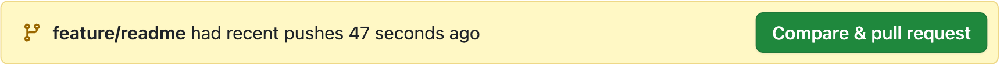
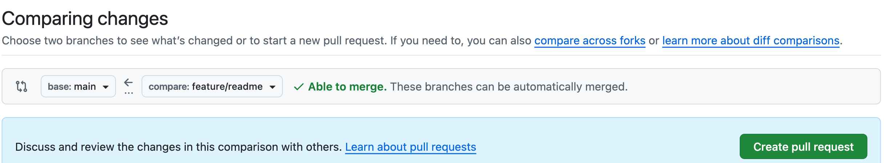
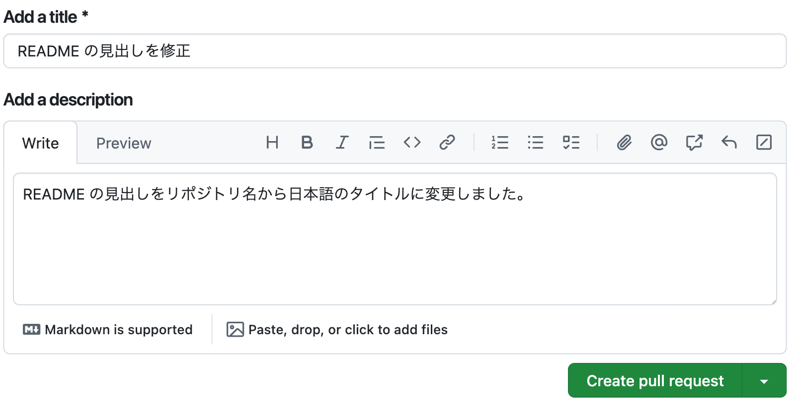
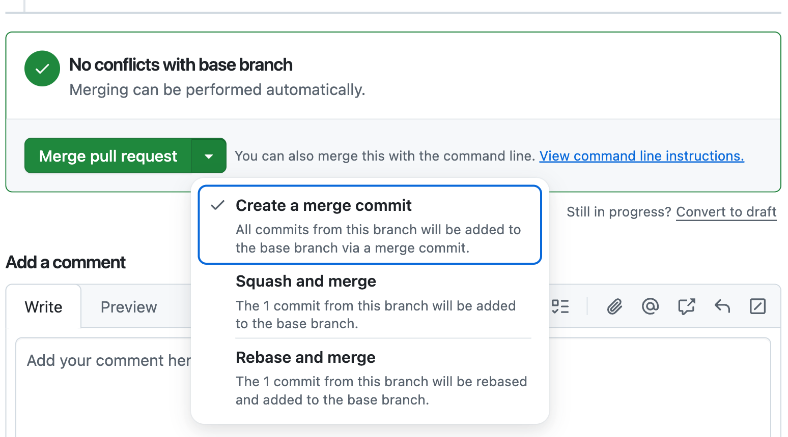

Git ハンドブック
Git の基本概念とよく使う操作を、はじめての人でも順を追って理解できるようにまとめました。各章は「概念 → なぜ必要か → 使い方」の流れで構成しています。図で仕組みをつかみ、コマンド例で手を動かして身につけましょう。
本文の途中に、色分けした囲みが3種類出てきます。色と役割は最後まで統一しています(それ以外の説明は通常の本文で書いています)。
Git とは
Git はバージョン管理システム(Version Control System、略して VCS)の1つで、ソースコードの変更履歴を追跡・管理するツールです。「いつ・誰が・何を変えたか」をすべて記録します。Git の特徴の1つは、変更履歴の持ち方にあります。単なる前後の差分ではなく、変更時点のすべてのソースコードを「コミット」と呼ぶスナップショットとして記録し、それを積み重ねて時系列で保持します。
Git の成り立ち
Git の作者は、Linux の生みの親としても有名なリーナス・トーバルズ(Linus Torvalds)です。フィンランド出身のソフトウェアエンジニアで、2005 年に Linux カーネルの開発を支えるために Git を作成しました。
ホスティングサービスと組み合わせる
Git は単体でも使えます。ただし、GitHub・GitLab・Bitbucket・CodeCommit などのホスティングサービスと組み合わせると、チームでの共同開発やコードレビューが効率化されます。
Git 以外の VCS には Subversion 、 Mercurial などがありますが、現在は Git が業界標準として広く使われています。Jujutsu というGitと互換性のあるVCSもあります。
基本概念
ここでは、Git を理解するうえで欠かせない基本概念と用語を説明します。
リポジトリ
リポジトリとは、ファイルの変更履歴を保存する特別なフォルダです。プロジェクトのファイル群と、それらの全変更履歴(コミット)をまとめて管理する単位を指します。リポジトリには2種類あります。
- ローカルリポジトリ … ローカル(自分の PC など）にあるリポジトリ。ここで編集・コミットを行います。オフラインでもほぼすべての操作ができます。日常会話では、次に説明するワーキングツリーを含めてローカルリポジトリと呼ぶことも多いです。
- リモートリポジトリ … GitHub などのホスティングサービスにあり、チームで共有可能なリポジトリ。ローカルリポジトリとの間で変更をやり取りします。
通常のフォルダとリポジトリの違い
リポジトリのフォルダは、見た目はふつうのフォルダです。ただし中に .git という隠しフォルダを持っている点が違います。この .git がリポジトリの実体で、変更履歴・ブランチ・設定はすべてここに保存されています。逆に .git を消すと、ただのフォルダに戻り、履歴も失われます。
.git があるかどうかがリポジトリとの違い。.git は隠しフォルダなので ls -a で見える。ワーキングツリー
ワーキングツリーは、実際にファイルを編集する作業スペースです。リポジトリから取り出した、いま手元で見えているファイル群のことを指します。ふだんエディタで開いて編集しているのが、このワーキングツリーです。
ステージング
ステージング(インデックス)は、次のコミットに含める変更を一時的に置いておく場所です。ワーキングツリーで加えた変更のうち、記録したいものをステージングに追加します。追加した変更をコミットで確定すると、リポジトリに保存されます。
add)、コミットでリポジトリに保存する(commit)。.git がローカルリポジトリ、それ以外のファイル群がワーキングツリーにあたる。.git はプロジェクトのルートに1つだけ存在し、サブディレクトリ内のファイルもすべてワーキングツリーの一部として管理される。コミット
コミットとは、ステージングに追加した変更を、履歴として1つの区切りで記録する操作、またその記録単位のことです。変更したファイルだけでなく、変更していないファイルも含めた、その瞬間のソースコード全体が、スナップショットとして丸ごと保存されます。コミットには自動で ID(ハッシュ値)が付き、時系列につながって履歴になります。コミットには、コミットした人の名前・メールアドレス・コミット日時・コミットメッセージも記録されます。「何のためにこの変更を加えたか」を後から読んでも分かるように、簡潔な説明をコミットメッセージとして付けます。
コミットメッセージは、後から履歴を読む人への説明書きです。
悪いコミットメッセージ
- 「fix」「update」「修正」など、変更内容が何も伝わらない曖昧な一言メッセージ
- 何を変更したかだけを書いて、「なぜ変更したか」の理由や目的を書かないメッセージ
良いコミットメッセージ
- 「ユーザー登録フォームのバリデーションを追加(空欄・メール形式の不正入力を弾く)」のように、何をどう変えたかと、その理由や目的が一目で分かるメッセージ
- 「ログイン時のセッションタイムアウトを30分に変更(セキュリティ要件に合わせた対応)」のように、変更の背景や目的も簡潔に添えたメッセージ
なぜステージングを使うのか
ワーキングツリーで変更したファイルの中から「コミットに含めるもの」だけを選んで記録できるからです。5ファイルのうち2つだけを先にコミットする、といったことも可能で、変更ごとの関連する複数ファイルを意味のある単位でコミットを分けられます。例えば、機能追加と不具合修正の変更が混ざっているとします。このとき、機能追加のファイルだけを先にステージングして1つ目のコミットにし、不具合修正のファイルは別にステージングして2つ目のコミットに分けられます。
ステージングは、コミットで確定する前に記録する内容を組み立てておく「控え室」のような場所です。
ブランチ
ブランチとは、履歴を枝分かれさせて、他に影響を与えずに独立して作業するための仕組みです。リポジトリは、通常 main という履歴の本流となるメインブランチが最初に作成されます。枝分かれさせると、元のブランチの履歴に影響を与えずに独立した作業空間が生まれます。また、枝分かれさせることを「ブランチを切る」「ブランチを生やす」と言うことが多いです。
ブランチはいくつでも作成可能で、いくつ作成しても元のブランチには影響しません。作成したブランチからさらにブランチを生やすことも可能です。チーム内で各自が別々のブランチを持つことで、並行して複数の作業を進められます。別々のブランチで行った変更を1つに統合する操作をマージと呼びます。
ブランチを切り替えると、手元のワーキングツリー(手元のファイル)も、そのブランチの状態に切り替わります。別のブランチで追加・変更したファイルは、切り替えると現れたり消えたりします。これはブランチ同士が隔離された作業空間になっていることを示しています。
git switch でブランチを切り替えると、ワーキングツリー(手元のファイル)もそのブランチの状態に切り替わる。feature/greeting に切り替えると greeting.js が現れ、main に戻すと消える。ブランチの命名規則
ブランチ名は、役割が一目で分かるよう、用途を表すプレフィックスを付けるのが一般的です。単語はハイフン区切りのケバブケースにし、チケット番号を含める運用も多いです(例: feature/123-login-form)。
| プレフィックス | 用途 | 例 |
|---|---|---|
feature/ | 機能追加 | feature/login-form |
fix/ / bugfix/ | バグ修正 | fix/header-layout |
hotfix/ | 緊急修正 | hotfix/login-error |
release/ | リリース準備 | release/1.2.0 |
なぜブランチを使うのか
メインの履歴を安定させたまま、機能追加やバグ修正を分離して進めるためです。もしメインブランチだけでチーム開発すると、未完成のコードがメインに混ざる・複数人の変更が作業の途中で予期せず衝突する・不具合の切り分けが難しくなるといった問題が起こり得ます。
main だけで進めると、次の問題が起こりやすい:
- ①未レビューの変更がそのまま
mainに載って動作保証が揺らぐ - ②複数の作業が同じ履歴に混ざって衝突しやすい
- ③不具合が出たときにどの変更が原因か切り分けにくい
一方、ブランチを切ればこれらの問題を避けられ、次のようなメリットが得られます。
- ①レビューをブランチ単位で行えるので、未承認の変更を
mainに載せず、mainが動作する状態を保てる - ②作業空間が隔離され、複数の作業を同時に安全に進められる
- ③不具合がブランチ内に閉じるため、原因が自分の変更だと切り分けやすい
ブランチ戦略
開発の進め方として、ブランチの運用ルールをあらかじめ決まった方式で運用するブランチ戦略を採用することが一般的です。規模やリリース頻度に応じて選びます。ここでは代表的な Git Flow と GitHub Flow を紹介します。
Git Flow
| ブランチ | 役割 | 分岐元 | 分岐タイミング | マージ先 | マージタイミング |
|---|---|---|---|---|---|
main | リリース済みの本番コード | 無し(最初から存在) | リポジトリ作成時 | 無し | 無し |
develop | 開発を統合する本流 | main | プロジェクト開始時 | 無し | 無し |
feature | 個々の機能開発 | develop | 新しい機能の開発を始めるとき | develop | 機能が完成しレビューを通過したとき |
release | リリース準備・最終調整 | develop | develop が固まりリリース準備を始めるとき | main と develop | リリース確定時 |
hotfix | 本番の緊急修正 | main | 本番で緊急の不具合が出たとき | main と develop | 修正が完了したとき |
GitHub Flow
main と feature だけのシンプルな運用です。feature を main から分岐し、レビュー後に main へマージします。
| ブランチ | 役割 | 分岐元 | 分岐タイミング | マージ先 | マージタイミング |
|---|---|---|---|---|---|
main | 常にデプロイ可能な本番 | 無し(最初から存在) | リポジトリ作成時 | 無し | 無し |
feature | 機能開発・バグ修正 | main | 新しい作業を始めるとき | main | PR がレビューを通過したとき |
Gitを使った開発サイクル
ここまでの基本概念を組み合わせると、日々くり返す開発サイクルが見えてきます。下の図の上段がローカル、下段がリモートでの作業です。
なお、この図は GitHub Flow を例にしています。
Git Flow の場合は、図中の
main が develop に置き換わります(feature は develop から分岐し、develop へマージ)。- ①リモートの変更をローカルに取り込むローカル
- ②main からブランチを作るローカル
- ③ブランチの中でファイルを編集するローカル
- ④変更をステージングに追加するローカル
- ⑤コミットするローカル
- ⑥ブランチをリモートに送るローカル→リモート
- ⑦ブランチから PR(プルリクエスト)を作成するリモート
- ⑧レビューを受けるリモート
- ⑨main にマージするリモート
- ↺⑨ の後は ① に戻り、また main から次のブランチを作る、をくり返す
「自分のブランチの変更を、メインブランチに取り込んでほしい」という依頼です。レビューや議論、承認のための仕組みで、多くはホスティングサービスの画面上で行います。プルリクエスト自体は Git の機能ではありません。プルリクエストはあくまでホスティングサービスの機能です。Git 自体は、プルリクエストの管理番号やレビューコメント、承認状態といったデータを保持していません。その点はご注意ください。
また、プルリクエストという名称自体もサービスによって異なります。GitHub / CodeCommit では Pull Request(PR)、GitLab では Merge Request(MR)と呼びます。
実践しながら学ぶ
ここからは、実際に手を動かしながら仕組みを掘り下げます。練習用のリポジトリを用意し、ブランチを切って変更を加え、PR を出して main に反映するまでを、コマンドを1つずつ打って体験します。読むだけにせず、必ず自分のターミナルで打ちながら進めてください。
Git には GUI ツール(SourceTree や VS Code の Git 機能など)もありますが、ここではあえてコマンドラインで操作します。理由は次のとおりです。
- Git のすべての操作ができる — GUI ツールはよく使う基本機能だけを画面に用意しているため、できることが限られます。CLI なら Git が持つすべての機能を使えます。
- どんな環境でも同じように使える — Windows でも Mac でも、コンテナ環境でも CI/CD 環境でも、クラウドの仮想マシンでも、SSH で入ったサーバーの中でも、あらゆる環境でターミナルさえあれば同じように操作できます。
- 身につけた知識がどこでもそのまま通用する — GUI はツールごとにボタンの位置や名前がバラバラですが、コマンドはどこでも共通です。一度覚えれば、どのチーム・プロジェクトでも応用が効きます。
練習用のリポジトリを用意して進めるのがおすすめです。ミスしても影響がなく、思い切って試せます。以降の実践では、この git-practice-repo を使って進めます。用意の仕方は次の節で、新規作成・既存リポジトリの利用の両方を説明します。
この節では、次のようなファイル構成の練習用リポジトリを想定して進めます。最初から全部を作る必要はありません。コマンドを進めるなかで、少しずつ追加・編集していきます。README.md や memo.txt といった名前は説明のための例です。中身は何でも構いません。
ディレクトリ構造git-practice-repo/ # 練習用リポジトリ
├── README.md # 最初からある説明ファイル。編集して変更を体験する
├── memo.txt # 新しく作る追跡対象のファイル(add / commit で使う)
├── secret.txt # 秘密情報のつもりのファイル。.gitignore で無視する
└── .gitignore # 無視したいパターンを書くファイル
config — 名前とメールを設定する
Git はコミットに「誰が変更したか」を記録します。そのため、最初の一度だけ、コミットに使う名前とメールアドレスを登録しておきます。未設定だと、コミットのときに警告やエラーが出ます。
最初の1回だけ$ git config --global user.name "Taro Yamada"
$ git config --global user.email "taro@example.com"
$ git config --global --list # 設定できたか確認
user.name=Taro Yamada
user.email=taro@example.com
--global の意味--global は「このパソコン全体の共通設定」という意味です。名前はチームで誰か分かるものに、メールは GitHub などホスティングサービスのアカウントに登録しているメールアドレスと同じものに合わせると混乱がありません。特定のリポジトリだけ別の設定にしたいときは、そのリポジトリの中で --global を外して実行します。
リポジトリを用意する
Git を使い始める出発点は2通りあります。自分でゼロから新しく作る場合と、既存のリポジトリを使用する場合です。自分の状況に合うほうを選んでください。以降の実践では、どちらの方法でも用意できる git-practice-repo を使って進めます。
新規リポジトリを作成する
自分でプロジェクトをゼロから始める場合です。git init で今のフォルダをリポジトリにし、README.md を作って最初のコミットをします。その後、ホスティングサービスで作った空のリモートへ push します。
ここで使っている git add や git commit などのコマンドは、このあとの各節でくわしく説明します。
新規作成$ mkdir git-practice-repo && cd git-practice-repo # フォルダを作って移動
$ git init # このフォルダを Git リポジトリにする
Initialized empty Git repository in .../git-practice-repo/.git/
$ echo "# git-practice-repo" > README.md # README.md を作成
$ git add README.md # ステージングに追加
$ git commit -m "最初のコミット" # 最初のコミット
次に、GitHub などのホスティングサービスで空のリモートリポジトリを作成し、そこにプッシュ します。リモートリポジトリの作成手順はサービスごとに異なるため、各サービスの公式ドキュメントを参照してください(本書では省略します)。
リモートに接続# ホスティングサービスの画面で空のリモートリポジトリを作り、その URL を控えておく
$ git remote add origin <リモートのURL> # origin として登録
$ git branch -M main # 既定ブランチ名を main にそろえる
$ git push -u origin main # 初回 push(-u でひも付け)
既存リポジトリを使用する
クローンは、リモートリポジトリを履歴ごとまるごとローカル(手元の PC)に複製する操作です。すでにあるリポジトリに参加するときは、そのリモートを clone して自分の PC に持ってきます。
clone$ cd ~/dev # 作業を置きたいフォルダへ移動
$ git clone <練習用リポジトリのURL>
Cloning into 'git-practice-repo'...
remote: Enumerating objects: 24, done.
Receiving objects: 100% (24/24), done.
$ cd git-practice-repo # できたフォルダに入る
origin(オリジン)とは
origin(オリジン)とは、クローン元のリモートリポジトリの URL に対して自動で付けられるエイリアス(別名)です。毎回長い URL を打つ代わりに、origin と短く書けます。このあとの push / fetch / pull でも、送り先・取得元としてこの origin を使います。origin がどの URL を指しているかは git remote -v で確認できます。なお、このようにリモートリポジトリの URL に名前を付けた参照のことを、Git ではリモートと呼びます。origin は、その既定のリモート名です。
remote$ git remote -v # 登録済みリモートのエイリアスとURLを確認
origin git@github.com:you/git-practice-repo.git (fetch)
origin git@github.com:you/git-practice-repo.git (push)
origin は既定の名前で、変更できるorigin は clone 時に自動で付けられる既定のエイリアス名で、予約語ではありません。好きな名前に変えられます。clone 時に git clone -o <名前> <URL> で別名を指定したり、あとから git remote rename origin <名前> で改名したりできます。また、リモートは複数登録できます。
サイクル1 — 1コミットを最後まで通す
ここからは、開発の1サイクルを最後まで通します。ブランチを切る → 変更する → 記録する → 共有する → main に取り込む → 片付ける。この一周を4回くり返しながら、使うコマンドを1つずつ増やしていきます。1周目の題材は README.md の見出しを書き換えるだけの、ごく小さな変更です。
branch — 今あるブランチを確認する
準備が整ったので、まずブランチを見ていきましょう。git branch で、今どこにいて、どんなブランチがあるかを確認しましょう。* が付いているのが現在のブランチです。
branch$ git branch # ローカルの一覧(* が今いるブランチ)
* main
ブランチの3つの種類
ブランチは、置き場所と役割で3種類に分けられます。名前は似ていますが、あるのはローカルとリモートのどちらか、という違いです。
- ローカルブランチ … ローカルにあり、実際に作業・コミットするブランチ(例:
main、feature/readme)。 - リモート追跡ブランチ … ローカルにあり、リモートブランチの状態をローカルに写したブランチ(例:
origin/main)。fetch／pull／pushで更新される。直接編集しない。最後に通信したときのリモートブランチのキャッシュとして働くため、オフラインでも自分のローカルブランチとリモートとの差分を確認できます。 - リモートブランチ … リモートにあり、チームで共有されるブランチ。
branch -a$ git branch -a # リモート追跡ブランチも含めて一覧
* main
remotes/origin/main
# (clone で用意した場合は remotes/origin/HEAD -> origin/main の行も加わる)
switch — 作業ブランチに切り替える
main で直接作業せず、作業用のブランチを作って切り替えます。git switch -c <名前> で、ブランチの作成と切り替えを同時にできます。ここでは feature/readme を作って移動してみましょう。
switch$ git switch -c feature/readme # 新しいブランチを作って切り替え(-c)
Switched to a new branch 'feature/readme'
$ git branch # * が feature/readme に移った
* feature/readme
main
$ git switch main # 既存ブランチへ切り替えるときは -c なし
Switched to branch 'main'
Your branch is up to date with 'origin/main'.
$ git switch feature/readme # 作業ブランチに戻る
Switched to branch 'feature/readme'
HEAD — 今いるブランチを指す目印
ところで、Git は「今どのブランチで作業しているか」を、どうやって知っているのでしょうか。その役割を担うのが HEAD(ヘッド) です。HEAD は「今いる場所(現在のブランチ)」を指す特別なポインタで、Git は常にこの HEAD を見て、どのブランチで作業中かを判断します。
git branch で * が付いているブランチが、いま HEAD の指す先です。git status の先頭に出る On branch feature/readme の表示も同じものを表します。git switch でブランチを切り替えるとは、この HEAD の指し先を別のブランチへ動かすということです。HEAD が移ると、それに合わせてワーキングツリーの中身もそのブランチの状態に切り替わります。
switch は「今いる場所」を別のブランチへ動かす操作。エディタやエクスプローラーから見えるファイルも、そのブランチの状態に切り替わる。status — 変更の状態を確認する
作業ブランチで、実際にファイルを変えてみましょう。git status は「今どのファイルがどの状態か」「次に何をすればいいか」を教えてくれる、頻繁に打つコマンドです。README.md の見出しを書き換えてから実行してみます。
status$ echo "# Git 練習リポジトリ" > README.md # 見出しを書き換える
$ git status
On branch feature/readme # 今いるブランチ
Changes not staged for commit: # 変更したがまだ add していない
(use "git add <file>..." to update what will be committed) # ← 次の操作のヒント
(use "git restore <file>..." to discard changes in working directory)
modified: README.md
no changes added to commit (use "git add" and/or "git commit -a")
ファイルの4つの状態
| 状態 | 意味 |
|---|---|
untracked | まだ一度もステージングに追加していない新規ファイル。Git はファイルの中身の変更を追跡していない状態 |
modified | 追跡中で、前回のコミットから変更あり。まだステージングに追加していない状態 |
staged | ステージングに追加済みで、次のコミットに含められる状態 |
deleted | 追跡中のファイルを削除した状態。削除もステージングに追加し、コミットが必要 |
add でステージング(緑)→ commit で記録。git status はこの位置を色で示してくれる。短縮表示 git status -s
毎回の長い出力が煩わしいときは、-s(short)で1行ずつ簡潔に表示できます。左の2文字が状態を表し、左列がステージング、右列がワーキングツリーの状態です。
status -s$ git status -s
M README.md # M=modified(変更)。右列Mなので未ステージング
# 例) ??=untracked(Git が未追跡の新規ファイル) / A=追加(staged) / D=削除 / MM=一部ステージング済みでさらに変更
git status の (use "git add ..." ...) のような行は、次に打つべきコマンドの案内です。迷ったら、まず status を打って、書いてあるヒントに従えばたいてい先に進めます。
add — 変更をステージングに追加する
変更を記録していきます。まずは git add で、記録したい変更をステージング(インデックス)に追加します。ファイルを個別に指定するほか、ディレクトリ指定や、スペース区切りで複数をまとめて追加できます。
add$ git add README.md # このファイルの変更をステージングへ追加
$ git add . # カレント以下の変更をまとめてステージングへ追加
$ git status -s
M README.md # 左列 M＝staged(ステージング済み)
commit — 変更を記録する
ステージングに追加した変更を、git commit で履歴に確定します。-m のあとにコミットメッセージを付けます。1つのコミットには、1つの意味のまとまりを入れるのがコツです。
commit$ git commit -m "README の見出しを修正"
[feature/readme 209a548] README の見出しを修正
1 file changed, 1 insertion(+), 1 deletion(-)
コミットメッセージの書き方
メッセージは件名(1行目)＋空行＋本文の形が基本です。件名は「何をしたか」を簡潔に、本文には「なぜそうしたか」を書きます。件名だけでも構いません。
feat: / fix: / docs: のような接頭辞を付ける Conventional Commits の書き方も使われる。push — リモートへ送る
ここまではローカルでの作業でした。コミットをチームと共有するには、git push でリモートに反映します。その作業ブランチを初めて送るときはupstreamを示す-u を付けます。
upstream(上流ブランチ)とは、ローカルのブランチに対して、既定の送り先・取得元として設定されたリモート追跡ブランチ(例: origin/feature/readme)のことです。-u で一度この送り先を設定しておくと、次回からは送り先を省略して git push / git pull だけで通じるようになります。
push$ git push -u origin feature/readme # 初回。-u で紐づけ(upstream)も設定
remote:
remote: Create a pull request for 'feature/readme' on GitHub by visiting:
remote: https://github.com/you/git-practice-repo/pull/new/feature/readme
remote:
To github.com:you/git-practice-repo.git
* [new branch] feature/readme -> feature/readme
branch 'feature/readme' set up to track 'origin/feature/readme'. # ← 紐づけ完了
$ git branch -vv # 各ブランチの upstream を確認
* feature/readme 209a548 [origin/feature/readme] README の見出しを修正
main f229e49 [origin/main] 最初のコミット
$ git push # 2回目以降は送り先を省略できる
各ブランチの upstream 設定は git branch -vv で確認できます。[origin/feature/readme] のように、送り先のリモートブランチが表示されます。
feature/readme を初めて push すると、リモートに同名のブランチが新しく作成される。同時に、送り先の目印となるリモート追跡ブランチ origin/feature/readme も作られ、-u によって feature/readme の upstream(既定の送り先)として設定される。PR作成 — 変更の取り込みを提案する
プルリクエスト(PR)は、「自分の feature ブランチの変更を、base ブランチ(ふつう main)に取り込んでよいか」という提案・依頼です。ここからはホスティングサービスの画面での操作になります。以下は GitHub の画面ですが、考え方はどのサービスでも同じです。

Compare & pull request ボタンが出る。ここが PR 作成の入口。
main)、compare が取り込み元(feature/readme)。Able to merge. は競合なく取り込めるという意味。
PR を使う理由は次のとおりです。
- レビューを受けられる … マージ前に他の開発メンバーが変更を確認し、指摘やコメントを残せる。
- 差分がまとまって見える … そのブランチで何を変えたかが一覧でき、議論の記録も残る。
- 安全に main へ入れられる … 承認を経てからマージするので、未完成のコードが main に直接混ざらない。
マージ — main に取り込む
PR が承認されたら、ホスティングサービスの画面でマージし、feature の変更を main に取り込みます。マージには方式がいくつかあり、実行する前に選びます。

▼ を押すと、方式を選べる。本書では Create a merge commit を選ぶ。| 画面の選択肢 | Git が行うこと |
|---|---|
| Create a merge commit | 両者を親に持つマージコミットを1つ作る。main 側が進んでいなければ、手元では Fast-forward で追いつける |
| Squash and merge | feature の複数コミットを1つにまとめて main に載せる。マージコミットは作られない |
| Rebase and merge | feature のコミットを main の先端に付け替える。本書では扱わない |
表の右側にある「Git が行うこと」を、もう少し詳しく見ておきます。合流のされ方には、おもに Fast-forward・3-way・Squash の3種類があります。
Fast-forward マージ
分岐したあと、main 側にコミットが追加されていない場合の合流です。Git は、main のラベルを feature の先端へ進めるだけで済みます。新しいマージコミットは作られず、履歴は一本のまま保たれます。
3-way マージ
分岐したあと、main 側と feature 側の両方にコミットが追加された場合の合流です。両方の変更を突き合わせて統合するため、両者を親に持つ新しいマージコミットが1つ作られます。このとき、feature の個々のコミットはそのまま main の履歴に残ります。
Squash マージ
Squash マージは、feature ブランチの複数のコミットを1つにまとめてから main に取り込む方法です。main には、まとめられた1つの通常コミットとして入り、マージコミットにはなりません。
細かい試行錯誤のコミットを main 側では1つに集約でき、履歴を簡潔に保てます。ただし、元のブランチの個々のコミット履歴は main には残らない点に注意してください。「1機能＝1コミット」で main をきれいに保ちたいチームでよく使われます。
マージボタンには、そのリポジトリで最後に選んだ方式が表示されます。Squash and merge と出ていても、右の ▼ から Create a merge commit を選び直せます。押す前に、いま何が選ばれているかを確かめてください。
また Squash マージを選ぶと、あとで git branch -d が失敗します。main 側には別のコミットとして載るため、Git からは未マージに見えるからです。その場合は PR がマージ済みであることを確認したうえで git branch -D を使います。
リモート(画面)でマージが完了しても、手元のローカルには、まだ古い状態の main と feature ブランチが残っています。ローカルの main を最新にするには、このあと git switch main → git merge origin/main が必要です(次の fetch と merge で扱います)。
fetch と merge — 手元を最新にする
PR がマージされると、リモートの main が進みます。まず git fetch でリモートの最新情報だけを取得しましょう。fetch は作業ファイルには触れず、origin/main(リモート追跡ブランチ)だけを更新するので、安全に「リモートは今こうなっている」と確認できます。
origin/main に取り込むだけ。手元の作業ファイルには手を付けない。fetch$ git fetch # リモートの情報だけ取得(ワーキングツリーは無変更)
From github.com:you/git-practice-repo
f229e49..c2bcc62 main -> origin/main
$ git log --oneline origin/main # 取得した origin/main の最新を確認
c2bcc62 Merge pull request #8 from you/feature/readme
209a548 README の見出しを修正
f229e49 最初のコミット
$ git diff origin/main # 自分の手元とリモートの差分を確認
確認できたら、その変更をいまのブランチ(ワーキングツリー)に取り込むには、git merge origin/main を実行します。fetch は origin/main を更新するだけなので、この merge ではじめて、手元のブランチと作業ファイルに反映されます。
取り込む(merge)$ git switch main # 取り込みたいブランチにいることを確認
Switched to branch 'main'
Your branch is behind 'origin/main' by 2 commits, and can be fast-forwarded.
(use "git pull" to update your local branch)
$ git merge origin/main # origin/main の内容を今のブランチに取り込む
Updating f229e49..c2bcc62
Fast-forward # ここで作業ファイルも最新になる
README.md | 2 +-
1 file changed, 1 insertion(+), 1 deletion(-)
ブランチ削除 — 役目を終えた枝を片付ける
PR がマージされ、main を最新化したら、役目を終えた feature ブランチを削除して整理します。ローカルとリモートの両方を消します。マージ済みのブランチは -d で安全に削除できます(未マージのものを強制削除するときだけ -D)。
ブランチ削除$ git branch -d feature/readme # ローカルの枝を削除
Deleted branch feature/readme (was 209a548).
$ git push origin --delete feature/readme # リモートの枝も削除
To github.com:you/git-practice-repo.git
- [deleted] feature/readme
$ git branch -a # main だけが残った
* main
remotes/origin/main
お疲れさまでした。ブランチを切る → 変更する → 記録する → 共有する → main に取り込む → 片付けるで、開発の1サイクルが完了です。ローカルとリモートのどちらも main だけになり、始めたときと同じ形に戻りました。
次のサイクル2では、同じ一周をもう一度たどります。今度は記録する前に変更の中身を確かめる方法と、いらなくなった変更を捨てる方法を加えます。迷ったら、まず git status で現状を確認するのが基本です。
サイクル2 — 確認と取り消し
2周目です。今度は memo.txt を新しく作り、あわせて README.md にも1行足してみます。ところが README への追記はやめることにした、という筋で進めます。記録する前に中身を確かめる方法と、いらなくなった変更を捨てる方法をここで覚えます。
2周目をはじめる$ git switch -c feature/memo # 最新の main から新しい枝を切る
Switched to a new branch 'feature/memo'
$ touch memo.txt # 新しいファイルを作る
$ echo "使い方はここに書きます。" >> README.md # README にも1行足してみる
diff — 変更の中身を確認する
git status は「どのファイルが変わったか」を教えてくれますが、中身がどう変わったかまでは分かりません。それを見るのが git diff です。記録する前に、自分が何を変えたのかをここで確かめます。
diff$ git status -s # まず今の状態を確認
M README.md
?? memo.txt
$ git diff # ワーキングツリーとステージングの差分
diff --git a/README.md b/README.md
index 8660881..370ebe4 100644
--- a/README.md
+++ b/README.md
@@ -1 +1,2 @@
# Git 練習リポジトリ
+使い方はここに書きます。
出力の読み方は次のとおりです。--- の行が変更前、+++ の行が変更後のファイルを表します。@@ -1 +1,2 @@ は「変更前は1行目から1行、変更後は1行目から2行」という位置の目印です。行頭が + なら追加された行、- なら削除された行、空白なら変わっていない行です。
ここで memo.txt が出てこない点に注意してください。git diff が比べるのはGit が追跡しているファイルだけです。memo.txt はまだ一度も add していない untracked なので、差分の対象になりません。
どこと どこを比べるか
git diff は、引数によって比べる対象が変わります。よく使う3つを挙げます。
| 書き方 | 比べる対象 |
|---|---|
git diff | ワーキングツリー ↔ ステージング。まだ add していない変更が見える |
git diff --staged | ステージング ↔ 直前のコミット。これから commit される中身が見える |
git diff <A>..<B> | ブランチ ↔ ブランチ。2つの枝の違いが見える |
--staged は add のあと、main..feature/memo は commit のあとに実行したものです。参考として出力を載せておきます。
diff --staged / diff A..B$ git diff --staged # add 済みの中身と直前のコミットを比べる
diff --git a/memo.txt b/memo.txt
new file mode 100644
index 0000000..e69de29
# memo.txt は空ファイルなので、追加された行は出ない
$ git diff main..feature/memo # main と作業ブランチの違いを見る
diff --git a/memo.txt b/memo.txt
new file mode 100644
index 0000000..e69de29
restore — 変更を元に戻す
差分を見て、README.md への追記はやめることにしました。git restore で、この変更を捨てます。
restore$ git restore README.md # README.md の変更を捨てて元に戻す
$ git status -s # README.md の行が消え、memo.txt だけになった
?? memo.txt
間違えた変更を取り消したいときは git restore を使います。ワーキングツリーの変更を捨てるのか、ステージングから外す(アンステージ)のかで、オプションが変わります。
restore の2つの形$ git restore <file> # ワーキングツリーの変更を取り消して元に戻す
$ git restore --staged <file> # ステージングから外す(変更自体はワーキングツリーに残る)
restore --staged はステージングから外すだけで、変更はワーキングツリーに残る。下段の restore <file> はワーキングツリーの変更そのものを破棄して元に戻す(ステージングは変えない)。git restore <file> で破棄したワーキングツリーの変更は、元に戻せません。本当に捨ててよいか、先に git diff などで中身を確かめてから実行しましょう。
log — 履歴を確認する
残った memo.txt を、サイクル1と同じ手順で記録します。
記録する$ git add memo.txt # ステージングに追加
$ git status -s
A memo.txt # 左列 A＝追加(staged)
$ git commit -m "memo.txt を追加"
[feature/memo ac52c03] memo.txt を追加
1 file changed, 0 insertions(+), 0 deletions(-)
create mode 100644 memo.txt
記録できたら、git log で履歴を見てみましょう。新しいコミットから順に、上から並びます。
log$ git log # 新しいコミットから順に表示
commit ac52c03592e5c37cefa8e505be6c9e3c9546b00e
Author: Taro Yamada <taro@example.com>
Date: Tue Jul 21 23:26:06 2026 +0900
memo.txt を追加
commit c2bcc62f2c693a7fa491f9a91f7819253ff680bf
Merge: f229e49 209a548
Author: you <you@users.noreply.github.com>
Date: Tue Jul 21 23:00:14 2026 +0900
Merge pull request #8 from you/feature/readme
README の見出しを修正
commit 209a54879b00cc268812cafca3b5255d51d6e7e5
Author: Taro Yamada <taro@example.com>
Date: Tue Jul 21 22:59:58 2026 +0900
README の見出しを修正
commit f229e498973aeb934d08c21637f446f8148c565d
Author: Taro Yamada <taro@example.com>
Date: Tue Jul 21 22:59:54 2026 +0900
最初のコミット
1つのコミットに、コミットハッシュ・作成者・日時・メッセージが並びます。先頭の40桁の英数字がコミットハッシュで、そのコミットを一意に指す ID です。サイクル1のマージコミットには Merge: の行があり、親となる2つのコミットが書かれています。なお画面上でマージしたこのコミットは、作成者がローカルの git config ではなくホスティングサービスのアカウントになっています。
この形式は履歴が増えると読みづらくなります。--oneline を付けると、1コミット1行の要約になります。ハッシュも先頭7桁に短縮されます。
log --oneline$ git log --oneline # 1コミット1行の要約表示
ac52c03 memo.txt を追加
c2bcc62 Merge pull request #8 from you/feature/readme
209a548 README の見出しを修正
f229e49 最初のコミット
コミットを指定するとき、40桁すべてを打つ必要はありません。--oneline に出る先頭7桁のように、ほかと区別できる長さがあれば足ります。git log ac52c03 のように使えます。
pull — 取得して取り込む
取り込みの前に、push と PR を済ませます。ここはサイクル1と同じ手順です。
push$ git push -u origin feature/memo # 初回なので -u 付き
remote:
remote: Create a pull request for 'feature/memo' on GitHub by visiting:
remote: https://github.com/you/git-practice-repo/pull/new/feature/memo
remote:
To github.com:you/git-practice-repo.git
* [new branch] feature/memo -> feature/memo
branch 'feature/memo' set up to track 'origin/feature/memo'.
push したら、ホスティングサービスの画面で PR を作り、Create a merge commit でマージします。画面の操作はサイクル1の「PR作成」「マージ」と同じです。
マージが済んだら、手元の main を最新にします。サイクル1では git fetch と git merge origin/main の2手に分けました。ここでは git pull の1手で済ませます。
pull$ git switch main # 取り込みたいブランチへ移動
Switched to branch 'main'
Your branch is up to date with 'origin/main'. # ← 取得前なので、まだ最新に見えている
$ git pull # 取得して、今のブランチに取り込む
From github.com:you/git-practice-repo
c2bcc62..0435096 main -> origin/main # ← ここまでが fetch の働き
Updating c2bcc62..0435096
Fast-forward # ← ここからが merge の働き
memo.txt | 0
1 file changed, 0 insertions(+), 0 deletions(-)
create mode 100644 memo.txt
出力の前半が取得、後半が取り込みです。1つのコマンドで2つの仕事をしているのが読み取れます。
サイクル1では git fetch で取ってきて git merge origin/main で取り込む、と2手に分けました。この2つをまとめたのが git pull です。先に差分を確かめたいときは fetch、そのまま取り込むときは pull と使い分けます。
なお本書の練習は1人で進めるため、ブランチを切る前の main はいつも最新です。しかしチームで開発するときは、他の開発メンバーが main を進めています。作業ブランチを切る前に git switch main → git pull で最新化する習慣をつけてください。
役目を終えた枝を片付ける
最後に、サイクル1と同じくブランチを削除します。ローカルとリモートの両方を消します。
ブランチ削除$ git branch -d feature/memo # ローカルの枝を削除
Deleted branch feature/memo (was ac52c03).
$ git push origin --delete feature/memo # リモートの枝も削除
To github.com:you/git-practice-repo.git
- [deleted] feature/memo
$ git branch -a # main だけが残った
* main
remotes/origin/main
2周目が終わりました。diff で中身を確かめ、restore でいらない変更を捨て、log で履歴を確認し、pull で手元を最新にしました。ローカルとリモートは、どちらも main だけに戻っています。
サイクル3 — 管理から外す
3周目の題材は .gitignore です。プロジェクトには、Git で管理したくないファイルがあります。パスワードや API キーを書いた秘密の設定ファイル、自動で作られるログやビルド結果などです。これらを Git の目から外す方法と、うっかりコミットしてしまったあとの外し方を扱います。
3周目をはじめる$ git switch -c feature/ignore # 最新の main から新しい枝を切る
Switched to a new branch 'feature/ignore'
ignore — Git に含めないファイルを決める
無視したいファイルは .gitignore というファイルに書きます。ここに書いたパターンと一致するファイルは untracked として扱われず、git status にも現れなくなります。秘密情報のつもりのファイルを1つ作って、実際に消えるところを見てみましょう。
ignore$ echo "secret" > secret.txt # 秘密情報のつもりのファイルを作る
$ git status -s
?? secret.txt # untracked として現れる
$ printf 'secret.txt\n*.log\n' > .gitignore # 無視したいパターンを書く
$ cat .gitignore
secret.txt
*.log
$ git status -s
?? .gitignore # secret.txt が消えた
*.log のように * を使うと、その形に当てはまるファイルをまとめて指定できます。secret.txt の行が git status -s から消え、代わりに .gitignore 自体が新しいファイルとして現れています。.gitignore はチームで共有するものなので、これは追跡してコミットします。
.gitignore に書いたパターン(secret.txt、*.log など)に一致するファイルは、Git の管理対象から外れる。.gitignore 自体は追跡してコミットする。rm --cached — 追跡だけをやめる
.gitignore に追記しても、すでに追跡済みのファイルは追跡対象のままです。あとから管理を外すには git rm --cached <file> で追跡だけを解除します(ファイル自体は手元に残ります)。
この落とし穴を、手を動かして確かめます。秘密情報を含む .env を、うっかり add してコミットしてしまった、という筋で進めます。
追跡を解除する$ echo "SECRET_KEY=12345" > .env # 秘密情報を含む .env を作る
$ git add .env && git commit -m "設定を追加" # うっかり追跡・コミットしてしまったとする
[feature/ignore a587493] 設定を追加
1 file changed, 1 insertion(+)
create mode 100644 .env
$ echo ".env" >> .gitignore # あとから .gitignore に .env を追記しても……
$ echo "KEY=xyz" >> .env # .env を変更してみると
$ git status -s
M .env # 追跡済みなので .gitignore に書いても無視されない
?? .gitignore # .gitignore 自体はまだ untracked
$ git rm --cached .env # 追跡だけをやめる(ファイルは手元に残す)
rm '.env'
$ git status -s
D .env # 左列 D＝削除がステージされた
?? .gitignore
git rm --cached を実行すると、git status -s に D .env が現れます。これは「削除がステージされた」状態です。ファイルそのものは手元に残っていますが、Git の記録から外す準備ができた、という意味です。この削除もコミットして、はじめて追跡解除が確定します。
削除もコミットする$ git add . # .env は無視されるので再追跡されない
$ git status -s
D .env # 削除はステージされたまま
A .gitignore # 左列 A＝追加(staged)
$ git commit -m ".gitignore を追加して .env の追跡を外す"
[feature/ignore 6b72e1f] .gitignore を追加して .env の追跡を外す
2 files changed, 3 insertions(+), 1 deletion(-)
delete mode 100644 .env
create mode 100644 .gitignore
$ git status -s
# 1行も表示されない。.env と secret.txt は .gitignore で無視されている
コミットのあと、git status -s は何も表示しなくなりました。.env は追跡から外れ、.gitignore の指定によって以後は変更しても現れません。ファイル自体は手元に残っているので、動作には支障がありません。
git rm --cached で外せるのは、これ以降の追跡だけです。すでに push したコミットの中身は履歴に残ります。秘密情報を誤って公開してしまった場合は、追跡を外すだけでなく、その鍵やパスワードを作り直してください。
push して PR を出す
ここからはサイクル1・2と同じ手順です。push して PR を作り、Create a merge commit でマージします。
push$ git push -u origin feature/ignore # 初回なので -u 付き
remote:
remote: Create a pull request for 'feature/ignore' on GitHub by visiting:
remote: https://github.com/you/git-practice-repo/pull/new/feature/ignore
remote:
To github.com:you/git-practice-repo.git
* [new branch] feature/ignore -> feature/ignore
branch 'feature/ignore' set up to track 'origin/feature/ignore'.
マージが済んだら、サイクル2と同じく git pull で手元の main を最新にします。
pull$ git switch main
Switched to branch 'main'
Your branch is up to date with 'origin/main'.
$ git pull
From github.com:you/git-practice-repo
0435096..b56e896 main -> origin/main
Updating 0435096..b56e896
Fast-forward
.gitignore | 3 +++
1 file changed, 3 insertions(+)
create mode 100644 .gitignore
取り込まれた変更は .gitignore の追加だけです。.env は同じブランチの中で追加してから削除したため、main から見た差分には残りません。
役目を終えた枝を片付ける
最後に、ローカルとリモートの両方でブランチを削除します。
ブランチ削除$ git branch -d feature/ignore # ローカルの枝を削除
Deleted branch feature/ignore (was 6b72e1f).
$ git push origin --delete feature/ignore # リモートの枝も削除
To github.com:you/git-practice-repo.git
- [deleted] feature/ignore
$ git branch -a # main だけが残った
* main
remotes/origin/main
作業フォルダの中身も見ておきます。Git の管理から外れたファイルが、手元にはそのまま残っていることを確認できます。
ls -a$ ls -a # 隠しファイルも含めて一覧(-a)
.
..
.env # 追跡は外れたが、ファイルは残っている
.git
.gitignore
memo.txt
README.md
secret.txt # 一度も追跡していないので、そのまま残る
3周目が終わりました。.gitignore で管理しないファイルを決め、git rm --cached で追跡だけを外しました。どちらも、ファイルを消さずに Git との関係だけを変える操作です。
発展
ここからは一歩進んだ内容です。HEAD の仕組み、やり直しと取り消し(amend / revert / reset)、作業の一時退避(stash)を扱います。さらにコンフリクトの解決、リリースのタグ、worktree なども取り上げます。これらは実務でいずれ必要になる操作です。実践章の内容に慣れてから読むのがおすすめです。
HEAD — 今いる位置を知る
switch のところで出てきた HEAD を、もう少し掘り下げます。HEAD は「今どのコミットにいるか」を指す特別なポインタです。ポインタとは「どこかを指し示す印」のことです。ふだんは現在のブランチを指し、そのブランチが最新コミットを指す、という2段構えになっています。つまりブランチも実はポインタです。コミットするたびに、ブランチと HEAD が新しいコミットへ一緒に進みます。
git log --oneline の出力にも (HEAD -> ...) として位置が表示される。HEAD の位置$ git log --oneline
a1b2c3d (HEAD -> feature/greeting) README の見出しを修正 # ← 今ここにいる
c3d4e5f (origin/main, main) 最初のコミット
直前のコミットをやり直す git commit --amend
メッセージの打ち間違いや、add し忘れたファイルに気づいたときは git commit --amend で直前のコミットをやり直せます。実行するとエディタ(多くは vi)が開き、メッセージを編集できます。
amend / -v$ git commit --amend # エディタが開き、メッセージを直せる
$ git commit -v # 差分を見ながらメッセージを書く
エディタが vi の場合、最初は文字を打てません。次の操作だけ覚えておけば大丈夫です。i で入力モードに入り、編集したら Esc で抜け、:wq と打って Enter で保存して終了。変更を捨てて終了したいときは :q! です。
--amend はコミットを作り直すため、すでに push 済みのコミットに使うとリモートと履歴が食い違います。まだ push していない直前のコミットにだけ使いましょう。
restore — 変更を元に戻す
間違えた変更を取り消したいときは git restore を使います。ワーキングツリーの変更を捨てるのか、ステージングから外す(アンステージ)のかで、オプションが変わります。
restore$ git restore README.md # ワーキングツリーの変更を取り消して元に戻す
$ git restore --staged README.md # ステージングから外す(変更自体はワーキングツリーに残る)
restore --staged はステージングから外すだけで、変更はワーキングツリーに残る。下段の restore <file> はワーキングツリーの変更そのものを破棄して元に戻す(ステージングは変えない)。git restore <file> で破棄したワーキングツリーの変更は、元に戻せません。本当に捨ててよいか、先に git diff などで中身を確かめてから実行しましょう。
revert — 履歴を残して打ち消す
git revert <commit> は、指定したコミットの変更を打ち消す新しいコミットを作成します。元のコミットは履歴に残したまま「取り消し」を1つ足すので、すでに push 済みのコミットでも安全に取り消せます。実行にはワーキングツリーをクリーンにしておく必要があります。
revert$ git revert a1b2c3d # 指定コミットの変更を打ち消すコミットを作る
[main 5a6b7c8] Revert "README の見出しを修正"
revert と reset の違い
取り消しには2つの考え方があります。履歴を残したまま打ち消す revert と、履歴そのものを巻き戻す reset です。
revert は取り消し用のコミットを追加するので履歴が残る。右:reset は HEAD を戻して以降を切り離す。共有(push)済みのコミットを取り消すなら、履歴を壊さない revert。まだ自分しか持っていない未共有のコミットを整理するなら reset。この線引きを守れば、他の開発メンバーの履歴を壊す事故を防げます。
revert を revert する(取り消しの取り消し)
revert しすぎたときは、そのrevert コミット自体をさらに revert すれば、打ち消しを打ち消して元に戻せます。revert は普通のコミットなので、同じ操作でやり直せます。
revert の revert$ git revert 5a6b7c8 # さっきの取消コミットを、さらに打ち消す
[main 9f8e7d6] Revert "Revert \"README の見出しを修正\""
reset — HEAD を巻き戻す
git reset <commit> は、指定したコミットまで HEAD を戻します。--soft / --mixed / --hard の3モードで、どこまで戻すか(ワーキングツリー・ステージング・HEAD)が変わります。
--soft＜--mixed＜--hard の順に広がる。--soft は変更がステージに残り、--mixed はワーキングツリーに残り、--hard は変更ごと消える。reset$ git reset --soft HEAD~1 # コミットだけ取消。変更はステージングに残る
$ git reset --mixed HEAD~1 # 既定。ステージングも取消、変更はワーキングツリーに残る
$ git reset --hard HEAD~1 # 変更ごと破棄(戻せない・要注意)
--hard はデータが失われるgit reset --hard は、コミットしていない変更をすべて削除します。元に戻せないので、実行前に必ず git status で内容を確認してください。共有済みのコミットには使わないこと。
reflog で「消えたコミット」を復元する
もし誤って --hard でコミットを消してしまっても、あきらめる前に git reflog を見ましょう。reflog には HEAD が移動した履歴が残っているので、消える前の位置を見つけて戻せることが多いです。
reflog で復元$ git reflog
a1b2c3d HEAD@{0}: reset: moving to HEAD~1
e5f6a7b HEAD@{1}: commit: 消えたはずのコミット # ← これを探す
$ git reset --hard e5f6a7b # 消える前の状態へ戻す
# あるいは git switch -c recover e5f6a7b で新ブランチとして救出
stash — 作業を一時退避する
変更の途中で急に別のブランチに移りたいけれど、まだコミットはしたくない。そんなときに使うのが git stash です。今の変更をいったん stash 専用の領域にスタックで退避し、ワーキングツリーをクリーンな状態に戻します。あとで git stash pop で元に戻せます。
stash$ git stash # 今の変更を退避、ワーキングツリーはクリーンに
Saved working directory and index state WIP on feature/greeting: a1b2c3 ...
$ git status -s # 何も出ない＝クリーン。別ブランチへ移れる
$ git stash list # 退避したものの一覧(スタック)
stash@{0}: WIP on feature/greeting: a1b2c3 ...
$ git stash pop # 最新(stash@{0})を復元し、スタックから削除
$ git stash drop stash@{0} # 不要な退避を削除(復元せずに捨てる)
stash)、あとで取り出す(pop)。捨ててよければ drop。コンフリクト — 競合が起きる仕組みと対処
同じファイルの同じ箇所を、main と feature で別々に変更していると、Git はどちらを残すか決められずコンフリクトを報告します。これはエラーではなく、人に選んでもらうための一時停止です。
コンフリクトの対処(補足)
実践では PR の画面でマージしますが、ローカルで解決する手順も知っておくと安心です(ここは読むだけでOK)。git pull(または git fetch + git merge)でコンフリクトが起きたら、次の流れで解決します。
コンフリクト解決$ git merge main
CONFLICT (content): Merge conflict in README.md
$ git status # 競合中のファイルを確認
# → ファイルを開き、競合マーカーを見て正しい内容に手で編集
$ git add README.md # 解決したことを Git に伝える
$ git commit # マージを完了(リベース中なら git rebase --continue)
コンフリクトが起きたファイルには、次の競合マーカーが入ります。<<< から >>> までを、最終的に残したい内容だけの形に書き直し、マーカー3行は必ず消します。
README.md の中身<<<<<<< HEAD
こんにちは # 今の自分のブランチ側
=======
Hello # 取り込もうとした相手側
>>>>>>> main
タグ
タグは、特定のコミットに名前をつける参照です。リリースバージョン(例:v1.0.0)などの節目に付けることが多いです。軽量タグ(lightweight)とアノテーションタグ(annotated)の2種類があり、リリース用途にはメッセージや署名を持てるアノテーションタグが推奨されます。
tag$ git tag -a v1.0.0 -m "最初のリリース" # アノテーションタグを作成
$ git tag # タグの一覧
v1.0.0
$ git push origin v1.0.0 # タグをリモートへ反映
git clone --shared
--shared は、同じマシン上の既存ローカルリポジトリから、オブジェクト(履歴データ)を共有する形で複製します。通常の clone がデータを丸ごとコピーするのに対し、--shared は元リポジトリの .git/objects を参照するので、コピーが速くディスク消費も少なくて済みます。
--shared は元の objects を参照するため軽量だが、元リポジトリに依存する。clone --shared$ git clone --shared ~/dev/practice practice-copy # 同じマシンの既存リポジトリから軽量複製
--shared は元リポジトリの objects に依存します。元を削除したり git gc で整理すると、複製側が壊れてしまいます。同じマシン上の一時的な用途(検証・並行作業)向けで、恒久利用や配布には通常の clone を使いましょう。
git worktree — 複数ブランチを同時に開く
worktree は、1つのリポジトリから複数の作業フォルダを同時に持つ仕組みです。履歴(.git)や設定は共有したまま、作業する場所だけを分けられます。clone を増やすのとは、まったく別のやり方です。
.git を共有しつつ、複数のフォルダで別々のブランチを同時に展開できる。通常の clone との違い
「もう1つ clone すればいい」とも思えます。ただ、clone を増やすと履歴やファイルが重複し、設定もばらつき、同じブランチを二重に操作してしまう危険があります。worktree は .git を共有するので軽く、同じリポジトリとして一貫します。
なぜ使うのか(AI エージェントとの相性)
ワーキングツリーが1つだと、ブランチを切り替えるたびに commit か stash を迫られます。worktree なら、その手間なく複数の作業を同時に進められます。
- 緊急修正に強い … 機能開発を止めず、別フォルダで割り込みの hotfix を進められる。
- PR レビューが楽 … 自分の作業を残したまま、他の開発メンバーの PR を別フォルダで動かして確認できる。
- AI エージェントと相性がよい … worktree ごとにエージェントを分ければ、複数タスクを同時並行で走らせても互いのファイルを踏み合わず衝突しない。1タスク＝1 worktree＝1ブランチ、と対応づけられる。
worktree# リポジトリ本体(practice)の中で実行する
$ git worktree add ../practice-hotfix hotfix/urgent # 既存ブランチを別フォルダに展開
$ git worktree add -b feature/a ../practice-feat # 新ブランチを作って展開(-b)
$ git worktree list # 今ある worktree の一覧
$ git worktree remove ../practice-hotfix # 片付け(手で消さない)
node_modules などの依存は worktree ごとに別なので、作るたびに npm install が必要です。同じブランチは二重に展開できません(Git が防いでくれます)。不要になったら手で消さず、git worktree remove を使ってください(手で消すと管理情報が残り、git worktree prune が必要になります)。
エイリアスを設定する
エイリアス(別名)は、よく使うコマンドやオプションに短い別名を付ける機能です。タイプ量を減らせます。git config --global alias.<別名> <コマンド> で登録し、設定は ~/.gitconfig に保存されます。
alias の設定$ git config --global alias.st status
$ git config --global alias.br branch
$ git config --global alias.co switch
$ git config --global alias.lg "log --oneline --graph --all"
$ git st # git status と同じ意味で使える
$ git config --global --get-regexp alias # 登録済みエイリアスの一覧
alias.st status
alias.lg log --oneline --graph --all
コマンド早見表
| コマンド | 何をする | いつ使う |
|---|---|---|
git init | 今のフォルダをリポジトリにする | ゼロから自分で始めるとき |
git config --global user.name/email | 名前・メールを設定 | 最初の1回だけ |
git clone <URL> | リモートを手元に複製 | プロジェクトに最初に参加するとき |
git remote -v | リモート(origin)を一覧 | 接続先を確認したいとき |
git branch / -a | ブランチ一覧(・追跡ブランチも) | 今どこにいるか見るとき |
git switch <name> | ブランチを移動 | 別のブランチで作業するとき |
git switch -c <name> | ブランチを作って移動 | 新しい作業を始めるとき |
git status / -s | 今の状態を表示(・短縮) | 迷ったらいつでも(呼吸するように) |
git diff | ワーキングツリー vs ステージングの差分 | 何を変えたか確認したいとき |
git diff --staged | ステージング vs 直前コミットの差分 | add した内容を確認するとき |
git add <file> / . | 変更をステージングに追加(・まとめて) | 記録したい変更を選ぶとき |
git add -p | ハンク単位で選んでステージングへ追加 | 一部分だけ追加したいとき |
git restore <file> | ワーキングツリーの変更を破棄 | 編集を取り消して元に戻すとき |
git restore --staged <file> | ステージングから外す(アンステージ) | add を取り消すとき |
.gitignore / git rm --cached | 無視設定 / 追跡だけ解除 | 管理したくないファイルがあるとき |
git commit -m "..." | 変更を履歴に確定 | キリの良いところで記録するとき |
git commit --amend | 直前のコミットをやり直す | push 前のコミットを直したいとき |
git log --oneline --graph | 履歴を簡潔に・分岐も表示 | これまでの流れを確認したいとき |
git stash / pop | 一時退避 / 取り出し | 作業を中断して切り替えるとき |
git push -u origin <name> | ひも付けて送る(初回) | そのブランチの初回 push |
git push | リモートへ送る | コミットを共有するとき |
git fetch | リモート情報を取得のみ | まず状況だけ確認したいとき |
git pull | 取得して取り込む | 作業開始前に最新化するとき |
git merge <name> | 変更を合流させる | ブランチを本流へ取り込むとき |
git branch -d <name> | ローカルのブランチを削除 | マージ後の片付け(未マージは -D) |
git push origin --delete <name> | リモートのブランチを削除 | 役目を終えた枝を消すとき |
git tag -a <name> | コミットに名前を付ける | リリースの節目を記録するとき |
git revert / reset --hard | 取り消し(安全 / 巻き戻し) | 共有済みは revert・未共有は reset |
用語集
- リポジトリ
- 変更履歴を保管する箱。手元の「ローカル」とサーバー上の「リモート」がある。
- ワーキングツリー
- 実際にファイルを編集する作業スペース。いま手元で見えているファイル群。
- ステージング(index)
- 次のコミットに含める変更を組み立てる控え室。
addで追加する。 - コミット
- ある時点のファイル全体を記録したスナップショット。履歴の最小単位。
- ブランチ
- 作業を枝分かれさせるためのラベル(ポインタ)。本流は通常
main。 - HEAD
- 今どのブランチ・コミットにいるかを指す特別なポインタ。
- tracked / untracked
- ファイルが Git の監視対象か否か。一度
addすると tracked になる。 - upstream / remote-tracking branch
- ローカルブランチの紐づけ先がupstream。リモートの状態の写しが
origin/mainなどの remote-tracking branch。 - origin
- いつものリモートリポジトリに付いた標準のあだ名。
- コンフリクト
- 同じ箇所への競合する変更について、どちらを残すか人が選ぶ状態。
- マージ / リベース
- ブランチを統合する2つのやり方。マージは分岐を残し、リベースは履歴を一直線にする。
- PR / MR
- 変更を本流に取り込むための依頼書。GitHub/CodeCommit は Pull Request、GitLab は Merge Request。
- スナップショット
- コミットが保存する、その時点のファイル全体の状態。差分ではなく丸ごとの記録。
- コミットハッシュ
- コミットを一意に識別する ID(既定は SHA-1)。
a1b2c3dのように先頭数文字で指せる。 - init(初期化)
- 今のフォルダを新しいリポジトリにする操作。中に
.gitが作られる。ゼロから始めるとき。 - clone(クローン)
- リモートリポジトリを、履歴ごとまるごと手元に複製すること。参加時の出発点。
- base / feature ブランチ
- PR での役割。取り込み先が base(通常
main)、変更を載せる作業用が feature。 - push / fetch / pull
- ローカルとリモートで変更をやり取りする操作。push=送る、fetch=取得だけ、pull=取得して取り込む(fetch + merge)。
- タグ(tag)
- 特定のコミットに付ける名前。リリース(例:
v1.0.0)などの節目に使う。 - stash(スタッシュ)
- 未コミットの変更を一時退避しておく棚。
popで戻す。 - .gitignore
- Git に追跡させないファイルのパターンを書くファイル。ここに書いたものは untracked にならない。
- restore / reset / revert
- 取り消し系。restore=ワーキングツリーの変更を戻す、reset=HEAD を巻き戻す(履歴書き換え)、revert=打ち消しコミットを足す(履歴を残す)。
- reflog
- HEAD が移動した履歴。
reset --hardで消したコミットの復元などに使える。 - マージの種類
- Fast-forward(ラベルを進めるだけ)、3-way(マージコミットを作る)、Squash(複数コミットを1つにまとめる)。
- ブランチ戦略
- チームのブランチ運用ルール。Git Flow(5種類)や GitHub Flow(main と feature だけ)が代表例。
- worktree
- 1つのリポジトリから複数の作業フォルダを同時に持つ仕組み。
.gitを共有したままブランチを並行して開ける。